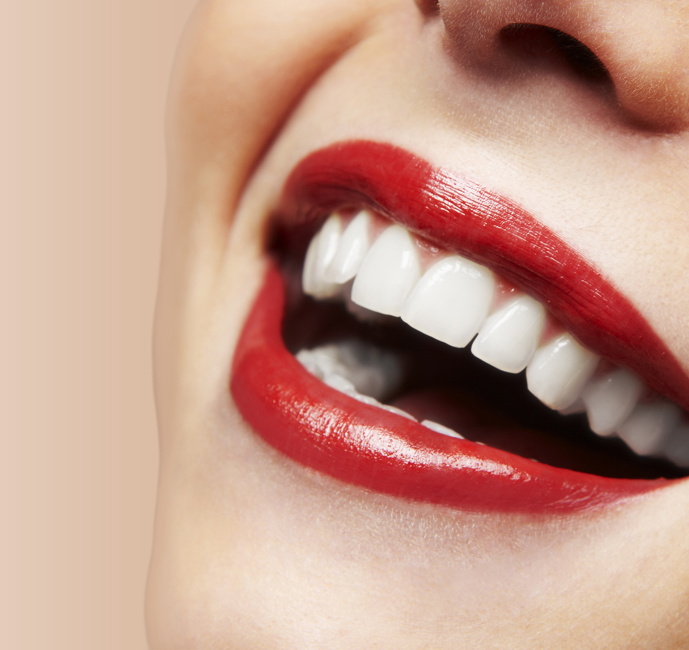

At-home Teeth Whitening Trend Continues to Rise
by At-home Teeth Whitening Trend Continues to Rise
Last Updated - 5 Days Ago

The explosion in home teeth whitening kits on the shelves of your local drugstore is no surprise. It's no wonder, as everyone wants to sport a dazzling row of pearly whites. There's no worse a feeling than putting on your favorite, sassy shade of red lipstick only to realize your teeth look dull, yellow, and stained. It's embarrassing and makes you want to stick your head in the sand. Am I right? At-home teeth whitening products involve the precise application of a bleaching agent to the teeth. Dental whitening procedures all involve all whitening of the tooth with hydrogen peroxide or carbamide peroxide--these are both bleaching formulas. At home whitening techniques also all involve the application of weaker, non-prescription levels of hydrogen peroxide or carbamide peroxide to the tooth without the expense of in-office dental treatment. Let's explore some of your options. Teeth Whitening Tray Kits All home whitening treatments take more time to whiten the tooth than the dental procedures do. This time factor stems from the fact that the peroxide solutions are weaker because a dentist doesn't supervise the application process. These kits may take the form of mouth trays, which deliver the peroxide gel evenly to the tooth, usually nightly for a period of 2 or more weeks. Consumers love these and rave about the results. The downside? They are bulky and awkward-- not custom-fit trays as the dentist would provide in-office. Teeth Whitening Strips There are also tooth whitening strips that have the peroxide bound to a thin, flexible piece that adheres to the tooth and is applied for about twenty minutes to a half hour two times a day for a number of weeks as instructed by the manufacturer (usually two weeks). The effect of these strips are residual, so it's important to keep with the schedule to receive the whitening benefits. While they are useful for whitening, it's a laborious process. Teeth Whitening Pens Rinses Whitening pens and whitening rinses have also lately experienced increasing popularity. Consumers who try them report that the peroxide does not seem as potent. For that reason, these are less effective ways. Tooth Whitening Paint Another technique which came to the marketplace later, but works along these lines, is tooth whitening paint. The peroxide formula is brushed onto the tooth and allowed to harden, progressively creating a whitening effect with time. This product first appeared as Colgate Simply White, which used a Carbamide Peroxide formula that's brushed on the tooth and let it harden for a half hour, two times a day. In 2003, two other products were developed: Colgate Simply White Night which uses hydrogen peroxide, and Crest's Night Effects which used a sodium percarbonate peroxide formula. These products are to be used just before going to bed each night. The benefits of utilizing these products are that they're easier to apply than the mouth tray kits or the whitening strips. In addition, there might be a situation in which you have a specific tooth which is more discolored than the rest of your teeth. This situation could occur, for instance, if you have had a root canal treatment on a tooth that caused it to become discolored. The whitening paint could then be applied to this single tooth to whiten it to the same level as the rest of the teeth. Another advantage is that tooth whitening paints tend to be more affordable than other home whitening kits. The drawback of tooth whitening paint (yep, there's always a catch) is that there's less control over the oral environment surrounding the peroxide application. For tooth whitening to work, the peroxide formula must be allowed to come into contact with the tooth over an amount of time. With mouth trays and strips, the peroxide is applied to the tooth and outside factors like food, drink, saliva, etc. affect the performance. The Bottom Line When you want to whiten your teeth without visiting the dentist's office, you don't need to look any further than to your local drugstore for the help you need. Through trial and error, you'll find the tooth whitener that works the best for you. Once you've achieved the ideal shade of white, keep your teeth white by avoiding foods that cause yellow teeth. You'll feel proud to hold your head high and beam a smile at everyone you meet.
Leave a Comment:
Search
Advertisement